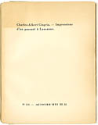
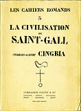
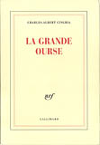
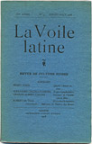
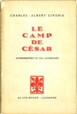
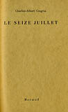
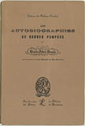
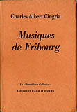
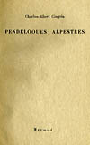

Les Livres
L'Eau de la dixième milliaire. (Pages sur Rome) · 1932
Charles-Albert Cingria, L'Eau de la dixième milliaire. (Pages sur Rome) , Lausanne, Mermod, (Aujourd’hui, n° 120), 1932
 Cingria garde des « souvenirs sinistres » de la rédaction de l'un de ses chefs-d'oeœuvre qu'il a écrit à la commande de son éditeur et mécène Henry-Louis Mermod quelques mois avant sa parution. Ces « pages sur Rome » illustrent idéalement l'alliage propre à l'auteur de promenades vigilantes et d'érudition galopante, d'observations et de dissertations, de guide touristique et de récit fantastique. Le texte est un aqueduc. Son parcours des eaux – « qui furent ici le début de tout comme elles furent le début de la terre » – révèle une Rome à la fois ville historique et ville éternelle.
Cingria garde des « souvenirs sinistres » de la rédaction de l'un de ses chefs-d'oeœuvre qu'il a écrit à la commande de son éditeur et mécène Henry-Louis Mermod quelques mois avant sa parution. Ces « pages sur Rome » illustrent idéalement l'alliage propre à l'auteur de promenades vigilantes et d'érudition galopante, d'observations et de dissertations, de guide touristique et de récit fantastique. Le texte est un aqueduc. Son parcours des eaux – « qui furent ici le début de tout comme elles furent le début de la terre » – révèle une Rome à la fois ville historique et ville éternelle.
A propos de la langue espéranto dite langue universelle · 1906
Charles-Albert Cingria, A propos de la langue espéranto dite langue universelle, Genève, Editons de La Voile latine, 1906
 La première plaquette de Cingria fut un pamphlet – ceux qui connaissent l'homme ne s'en surprendront guère. L'écrit s'en prend à l'invention du Dr Zamenhof à qui le tout Genève fait un concert de louanges lors du deuxième congrès internationnal consacré à l'espéranto. Nous sommes à la fin du moins d'août 1906.
Par un subterfuge éditorial dont il a le secret, le jeune écrivain réagit quelques semaines à peine après l'événement ; il dénonce la « vivisection nauséabonde » d'une langue faite de bric latin et de broc germanique, et l'hybris d'un « monsieur à redingote et à lunettes d'or » qui prétend à créer une langue, alors qu'une langue est la vie d'un peuple. Par là, Cingria s'inscrit dans le débat sur la nature, organique ou institutionnelle, du langage qui divise les linguistes. En même temps que son intérêt vif pour ces questions, il démontre son sens de la polémique et son don du rythme.
La première plaquette de Cingria fut un pamphlet – ceux qui connaissent l'homme ne s'en surprendront guère. L'écrit s'en prend à l'invention du Dr Zamenhof à qui le tout Genève fait un concert de louanges lors du deuxième congrès internationnal consacré à l'espéranto. Nous sommes à la fin du moins d'août 1906.
Par un subterfuge éditorial dont il a le secret, le jeune écrivain réagit quelques semaines à peine après l'événement ; il dénonce la « vivisection nauséabonde » d'une langue faite de bric latin et de broc germanique, et l'hybris d'un « monsieur à redingote et à lunettes d'or » qui prétend à créer une langue, alors qu'une langue est la vie d'un peuple. Par là, Cingria s'inscrit dans le débat sur la nature, organique ou institutionnelle, du langage qui divise les linguistes. En même temps que son intérêt vif pour ces questions, il démontre son sens de la polémique et son don du rythme.
Anthologie de Charles-Albert Cingria · 1995
Charles-Albert Cingria, Anthologie de Charles-Albert Cingria, préface de Jean-Louis Kuffer, Bordeaux, L'Escampette, 1995, 154pp.
Il est très peu d'écrivains contemporains qui semblent plus étrangers que Charles-Albert Cingria aux tumultes de ce qu'on appelle l'actualité, et qui nous propulsent à la fois, avec autant d'énergie, au coeur même du présent. Cingria aura traversé la moitié de notre siècle ponctué de révolutions locales et de guerres mondiales sans que ses écrits n'en conservent de traces significatives, et pourtant on se tromperait en affirmant qu'il a ignoré son époque. Ce n'est pas qu'il se voile la face ou qu'il prône le dégagement. Simplement il vit à un autre étage. Ce n'est pas qu'il soit coupé de la réalité. Au contraire il l'investit avec une intensité particulière, mais d'une manière qui lui est propre. Ce n'est pas qu'il fuie la terre des hommes. C'est qu'il l'arpente et l'habite à sa façon. Son temps n'est pas celui des grands événements et des grandes questions du jour, dont, relevait Jean Paulhan, il se « foutait complètement ». (Jean-Louis Kuffer)Contient vingt-sept textes de Charles-Albert Cingria parus en périodiques : « Question importante », « Anémie », « Quinze novembre », « Moderne voulu moderne », « Ciel de Paris », « Petit carême aérien », « Two questions », « La Lettre », « Truculence », « Sonate », « Rois fainéants », « Eloge du cycle », « Veillée rurale », « Propos sur l'information », Tapisserie de triomphe », « Le Pain et le Sel », « Auteurs et éditeurs I », « Auteurs et éditeurs II », « Auteurs, éditeurs et... lecteurs III », « D'un jeudi à l'autre », « L'Hiver », « Une semaine », « Peindre », « Les Petits Monstres », « Salut aux lacs », « Rendre les livres » et « Faire apprendre par coeur ».
Bois sec Bois vert · 1983
Charles-Albert Cingria, Bois sec Bois vert, Paris, Gallimard, (collection « L'Imaginaire »), 1983, 286pp.
En 1933, Jean Paulhan écrivait à André Gide : « Je ne serais pas loin de voir dans Cingria un grand écrivain. » C'était aussi l'avis de Claudel, de Ramuz, de Cocteau, de Max Jacob et de quelques autres. Quinze ans plus tard paraissait Bois sec Bois vert qui, aujourd'hui encore, est comme le microcosme d'une oeuvre que son auteur dispersait autant par nécessité que par insouciance, mais qui s'est révélée avec le temps considérable, et d'une rare cohésion dans sa diversité. Si plusieurs textes que réunit Bois sec Bois vert semblent ainsi relever plus ou moins du genre de la nouvelle (« Xénia et le diamant »), du conte fantasmagorique (« Hyppolite hippocampe »), de l'étude littéraire historique (« Lou Sordel ») ou archéologique (« Le Compte des formes »), ils appartiennent en fait comme les six autres au genre unique et indéfinissable que s'est créé le génie vadrouilleur de Cingria. Captant l'extraordinaire acuité de sensations d'un être qui n'ignora que l'indifférence, c'est la langue elle-même ici qui voit, fait voir, et promène délectablement le lecteur. Avec son mélange d'élaboration fastueuse et de spontanéité déflagrante, elle nous restitue de la même façon le suc des temps anciens où déambulait l'érudition imaginative de l'écrivain, et la vibration des instants de ce monde que son regard toujours neuf et libre enregistrait pour les magnifier. « Je ne suis pas un nom », a-t-il noté, « il n'y a que la vie qui m'intéresse. » En retour la vie éclate dans tout ce qui demeure sous le nom de Cingria. (Jacques Réda) Bois sec Bois vert · 1948
Charles-Albert Cingria, Bois sec Bois vert, Paris, Gallimard, 1948
 A part « Hippolyte hippocampe » (qui n'est que Phèdre à rebours) et « Le Haut Bief » qui ont paru dans La NRF et dans Mesures en l'espèce d'articles, ces textes ont déjà vu le jour sous forme de petits livres. [...] Peut-être alors serait-il nécessaire de dire quelques mots d'introduction aux pages qui vont suivre. J'en serais incapable, ne les ayant pas regardées. Non par présomption ou pour éviter une fatigue : pour me conformer au très haut enseignement d'un de mes amis de cette terre que j'admire le plus et dont le conseil est le plus à écouter : Max Jacob ; disant : « Ne jamais revoir, la plume en main, un texte qui n'est pas de l'année même, autrement tout est en bas. » J'eusse bien préféré que tout fût en bas, mais tel n'était pas l'avis de ceux qui voulaient cette édition, et j'ai bien dû m'y soumettre. (Charles-Albert Cingria, « avant-propos » inédit au projet d'oeuvre complète, vers 1936.)
A part « Hippolyte hippocampe » (qui n'est que Phèdre à rebours) et « Le Haut Bief » qui ont paru dans La NRF et dans Mesures en l'espèce d'articles, ces textes ont déjà vu le jour sous forme de petits livres. [...] Peut-être alors serait-il nécessaire de dire quelques mots d'introduction aux pages qui vont suivre. J'en serais incapable, ne les ayant pas regardées. Non par présomption ou pour éviter une fatigue : pour me conformer au très haut enseignement d'un de mes amis de cette terre que j'admire le plus et dont le conseil est le plus à écouter : Max Jacob ; disant : « Ne jamais revoir, la plume en main, un texte qui n'est pas de l'année même, autrement tout est en bas. » J'eusse bien préféré que tout fût en bas, mais tel n'était pas l'avis de ceux qui voulaient cette édition, et j'ai bien dû m'y soumettre. (Charles-Albert Cingria, « avant-propos » inédit au projet d'oeuvre complète, vers 1936.)
Cahiers bleus · 1982
Cahiers bleus, Troyes, ( n° 24), été 1982
Avec des contributions de Edmond Humeau, Jacques Réda, André Dhôtel, Jean-Marie Dunoyer, Georges Borgeaud, Géa Augsbourg, Yoki, Pierre Olivier Walzer, Christian Noorbergen et Dominique Daguet, et des textes inédits de Cingria : « Retour au cadastre », « Lettre à Germain Paulhan », « Petite mise au point », « Faire le malin », « Retour aux jupes », « Morale murale », « Six petites lettres » et « Chine ». Cahiers de l'Alliance culturelle romande · 1983
Cahiers de l'Alliance culturelle romande, Genève, (n° 29), novembre 1983
Ce cahier est consacré à Alexandre et Charles-Albert Cingria, à l'occasion du centième anniversaire de la naissance de ce dernier. C'est la raison qui nous fait commencer par le cadet. De nombreuses études présentent l'un et l'autre. Elles ne doivent pas nous faire oublier ce qu'ils ont de commun, d'une intensité rare chez deux frères, maîtres dans des arts différents. (Weber-Perret, extrait de l'éditorial).Contient des contributions de (pour la partie consacrée à Charles-Albert) Jacques Chessex, Jean-Louis Kuffer, Pierre-Olivier Walzer, Georges Anex, Jacques Réda. André Desponds, Richard Garzarolli, Bruno Ackermann, Doris Jakubec, Jean-Claude Genoud, Philippe Jaccottet, Philippe Kaenel, Gabrielle Faure, Jil Silbenstein, Charles-F. Sunier, Alain Rochat, Dominique Monnin, Olivier Goy, Roger Guignard, Isabelle Melley-Cingria, Edmond Humeau, Sven Stelling-Michaud, Victor Desarzens, Georges Borgeaud, Maurice Chappaz, Henri Noverraz, Georges Duplain et Henri Perrochon. Contient des textes et des extraits de Cingria : « Déplacement », « L'Ame antique », « A l'inventeur de l'esperanto », « Odeur de roseaux », « Les Années 33 sq. », L'Eau de la dixième milliaire « Aria del mese », « Grand questionnaire », « Recensement », « Eloge du cycle », « Images de la Suisse », « Baignade fluviale », « Arrivée à Paris », « Novalaise », « La Fameuse étoile », « Dialogue par la pluie » et « Les Chèvres ».
Charles-Albert Cingria en roue libre · 2005
Nicolas Bouvier, Charles-Albert Cingria en roue libre, édition Doris Jakubec, Carouge-Genève, Zoé, 2005, 172pp.
Nicolas Bouvier (1929-1998), voyageur ouvert au monde entier et aux langues inconnues grâce à son oreille musicienne, n'a pas croisé Charles-Albert Cingria (1883-1954) sur les routes et les chemins, autour de Genève, de Paris ou de Rome, ni n'a fait halte dans les mêmes bibliothèques à la recherche des mêmes manuscrits. Mais il a lu ses chroniques, ses proses, ses récits fantastiques ou fantasmagoriques, ses traductions des maîtres anciens, entrant ainsi en dialogue avec lui, cherchant les raisons de ces instants magiques où le monde dévoile son secret, son sens lumineux, sa beauté légère. Ce qui intéresse Nicolas Bouvier lisant Cingria, homme au charisme épique, c'est la manière d'écrire le voyage, l'art de circuler et d'aller et venir tout en observant le proche comme s'il était neuf et inconnu.« Un mètre carré, et l'univers », c'est la formule de Cingria pour déambuler, s'étonner, vivre, méditer, écrire.
Le titre de ce livre, choisi par Nicolas Bouvier, souligne le rapport très libre qu'il entretient avec Cingria: lâcher prise et rouler sans entrave.
Charles-Albert Cingria. L'Instant intemporel · 2008
Jacques Chessex, Charles-Albert Cingria. L'Instant intemporel, Lausanne, L'Age d'Homme, (« Poche suisse n°240 »), 2008, 89pp.
Contemporain de Claudel et de Strawinsky, Charles-Albert Cingria va son chemin dans le Moyen Age des antiphonaires et la plus libre invention moderne. C'est qu'il vit comme personne l'instant et l'intemporel, soucieux de Dieu, de style, d'images, de stupeur inspirée au choc des figures et des choses.Prosateur au génie dru, conteur d'histoires enluminées comme autant de miracles quotidiens, il pratique la digression du chat et la halte du pèlerin comblé par la grâce d'être là. Ecrivain sauvage, mondain, intransigeant, et l'un des styles les plus élaborés et printaniers du vingtième siècle. (Jacques Chessex)
Charles-Albert Cingria. Verbe de cristal dans les étoiles · 2007
Anne Marie Jaton, Charles-Albert Cingria. Verbe de cristal dans les étoiles, Lausanne, Presses polytechniques et universitaires romandes, (« Le savoir suisse »), 2007, 135pp.
Sans cesse on voit ressurgir l'oeuvre inclassable de Charles-Albert Cingria. Les petites feuilles que dispersait l'érudit vagabond ont été converties en oeuvres complètes et ses lettres sont recueillies comme des perles. Mais comment lire ses livres déroutants, aux titres étranges ? Cette étude révèle ces classiques comme un monument de fraîcheur. L'écrivain lie ses fidèles comme dans une société secrète avec leur ferveur et leurs marottes cingriesques. De cette « épopée des petits riens », Anne Marie Jaton dégage la science, cachée sous les grâces de la désinvolture. La liberté de pensée y est souveraine et capte la vie. Amoureux du latin, du Moyen Age, des chats et de la musique, Cingria a pratiqué en vérité les grandes audaces de la modernité : temps désarticulé, folie des détails, narration rebondissant par les surprises enchanteresses et continues de l'écriture. Charles-Albert Cingria · 1967
Jacques Chessex, Charles-Albert Cingria, Paris, Pierre Seghers, (« Poètes d'aujourd'hui » n° 170), 1967, 190pp.
Charles-Albert Cingria (1883-1954). Génial vagabond de l'Europe latine, il a porté ses pas, avec une désinvolture de grande race dans les contrées les plus singulières de l'esprit. Il a ramené de ses voyages un carnet de route où la poésie reste à jamais prisonnière. D'une intransigeance hautaine, Charles-Albert Cingria, entouré d'une légende de pauvre pèlerin, revit grâce à Jacques Chessex, poète et romancier suisse, nourri aux mêmes sources. Charles-Albert Cingria · 2004
Charles-Albert Cingria, dossier coordonné par Alain Corbellari, Lausanne, L'Age d'Homme, (« Les Dossiers H »), 2004, 490pp.
« Constantinopolitain, c'est-à-dire Italo-franc levantin », comme il aimait à le dire lui-même, Charles-Albert Cingria (1883-1954) est l'un des écrivains les plus inclassables du XXe siècle. Natif de Genève, mais farouche catholique, dandy ruiné, il promena sa silhouette de clochard vélocipédiste entre Paris, où il garda longtemps un pied-à-terre, et la Suisse romande, dont il fut, aux côtés de Ramuz, de Gilliard, de Gonzague de Reynold, l'un des promoteurs du renouveau littéraire avant d'être l'un des mentors de la génération des Jaccottet, Chessex et Borgeaud. Collaborateur régulier de la NRF, ami de Max Jacob, de Claudel, de Paulhan, Cingria reste victime d'une légende d'un pittoresque trompeur et de l'apparent éclatement de son oeuvre, où l'érudition donne la main à la fantaisie dans un irrépressible élan de liberté créatrice qui bouleverse les frontières des genres. Pour les cinquante ans de sa mort, ce « Dossier H » fait le point sur sa fortune critique et brosse de lui un portrait témoignant de l'actualité de son oeuvre et de la séduction qu'elle opère sur un lectorat de plus en plus nombreux. Chiens & chats littéraires chez Cingria, Rousseau et Cendrars · 2002
Jacques Réda, Jacques Berchtold, Jean-Carlo Flückiger, Chiens & chats littéraires chez Cingria, Rousseau et Cendrars, Genève, La Dogana, 2002, 135pp.
« Les chats ont d'autres idées que les chiens sur la vie », notait Octave Mirbeau — et sans doute d'autres lectures, serait-on tenté d'ajouter. Chiens et chats, en tout cas, ont littéralement investi le territoire littéraire, y imprimant les plus visibles et lisibles des empreintes. Ils ont aussi divisé l'humanité (et plus particulièrement les écrivains) en deux clans souvent peu aimables l'un envers l'autre. « Comme chiens et chats » dit la sagesse des nations... et « li chien soun dou bou Dieu et li cat soun dou diable » ne craint pas d'affirmer un proverbe provençal.Emblème de la fidélité, le chien ne s'alarme que de l'abandon de ses maîtres ; le chat, pour sa part, jaloux de son indépendance, hédoniste et libertaire, saura s'attacher — mine de rien — des écrivains comme Baudelaire, Mallarmé ou Léautaud. Dans cet ouvrage, c'est à Rousseau, Cendrars et Cingria d'évoquer pour nous leurs compagnons chiens & chats...
Cippe à Charles-Albert Cingria. Un recueil d'hommages · 2011
Cippe à Charles-Albert Cingria. Un recueil d'hommages, Bienne, ACEL, (Gollion, Infolio), 2011, 154pp.
Ce cippe « hors série » accompagne le cippe « normal » consacré à Cingria à l'occasion de la sortie des nouvelles Oeuvres complètes de Charles-Albert Cingria qui paraissent cet automne à L'Age d'Homme. Ce « cippe à Charles-Albert Cingria » est réalisé dans l'esprit qui avait prévalu à la composition de la « Couronne de Charles-Albert Cingria » (NRF, 1955) et à la « Nouvelle couronne de Charles-Albert Cingria » (NRF, 1993). Une anthologie, ici, composée en pensant aux fameuses Petites Feuilles, avec de très courts textes d'amis et d'auteurs ayant une certaine dilection pour Cingria.Parmi lesquels, Pierre Alechinsky, Pascal Commère, Philippe Delaveau, Alain Duault, Guy Goffette, Philippe Hélénon, Patrick Kéchichian, Jean-Georges Lossier, Jean-René Moeschler, Gilles Ortlieb, Jacques Réda, Jean Starobinski, Pierre Voélin ou Alexandre Voisard.
Colères et antidotes · 2009
Charles-Albert Cingria, Colères et antidotes, édition Maryke de Courten, préface de Daniel Maggetti, Lausanne, L'Age d'Homme, (collection « Poche suisse » n° 251), 2009, 179pp.
"« Charles-Albert Cingria ? Un sujet rêvé pour les amateurs de qualificatifs rares, d'expressions recherchées, d'images cocasses. Capricant pour les uns, coruscant pour les autres ; lutin insaisissable et papillon de bibliothèque, selon Claudel ; phosphorescence qui court, renchérit Cocteau ; ayant l'air d'un clown, ou d'un prêtre défroqué, aux yeux de Henry Miller ; pratiquant un style gras et onctueux avec quelque chose de monacal, Paulhan dixit ; et je vous épargne les occurrences du fantasque, du vélocipédiste, du vagabond, e che diavolo ne so io. Maurrassien et troubadour ; érudit et pique-assiette ; Turc et Genevois ; raffiné et SDF. Tout ce qu'il faut, en somme, pour être un cas : et un cas littéraire, ce n'est jamais très loin du domaine des curiosités — d'où le constat que, hors d'un cercle plutôt étroit d'inconditionnels, eux-mêmes écrivains pour la plupart, on a volontiers tendance à ne pas le prendre au sérieux. Si on ajoute au tableau son goût du paradoxe et sa biographie atypique, on comprend que Cingria soit identifié au mieux à un original, au pire, à un ludion ou à une girouette. » (Extrait de la préface de Daniel Maggetti)Son oeuvre touffue, dense, construite, forte, se présente sous la forme de brefs récits et de propos dont la cohésion est de plus en plus évidente. Après avoir été un marginal, Charles-Albert Cingria entre aujourd'hui dans la constellation des grands écrivains du XXe siècle. Le lecteur découvrira dans ce volume un choix de colères et de ravissements encore inconnus du grand public, qui illustrent les multiples facettes de sa paradoxale nature. (Maryke de Courten)"
Correspondance avec Igor Strawinski · 2001
Charles-Albert Cingria, Correspondance avec Igor Strawinski, édition Pierre-Olivier Walzer, Lausanne, L'Age d'Homme, (collection « Nouvelles correspondances de Charles-Albert Cingria » n°1), 2001, 89pp.
Pendant son séjour en Suisse, dans les années 1914-1920, Igor Strawinsky, qui était déjà l'auteur remarqué du Sacre du printemps et de Petrouchka, avait noué des relations amicales avec l'intelligentsia romande de l'époque, groupée sous l'égide des Cahiers vaudois, avec Ramuz en particulier avec qui il composera bientôt la fameuse Histoire du soldat. Mais il fut tout de suite attentif également à la présence, dans le groupe, du jeune musicologue Charles-Albert Cingria, qui nourrissait sur la musique des idées parallèles aux siennes. Il avait du plaisir à le retrouver, entre Morges et Vevey, et à discuter avec lui de la théorie, déjà développée dans un article de La Voile latine (« Essai de définition d'une musique libérée des moyens de la raison discursive »), selon laquelle est condamnable la musique illustration de sentiments, et seule défendable la musique non sentimentale visant à une « délectation supérieure ». Dès lors se noua entre les deux hommes une solide amitié qui dura autant que leur vie, et qui se traduisit par une correspondance, certes assez décousure, étant donné la vie fort agitée et vagabonde du musicien, mais toujours franche et pleine d'intérêt. En 1932, quelques passages du Pétrarque de Charles-Albert enchantèrent Strawinsky et valurent à leur auteur une grande citation élogieuse dans le second volume des Chroniques de ma vie. A Paris, Charles-Albert est l'invité de la plupart des premières de musicien, il est aussi son invité dans sa loge, à sa table, dans les divers refuges savoyards où l'amènent les maladies de sa femme et de sa fille. Et Charles-Albert sera encore de la première du Rake's Progress, à Venise, en septembre 1951.Rien de plus passionnant que les échanges amicaux entre un esprit aussi original que celui de Cingria avec l'un des plus grands créateurs de son époque.
Erudition et liberté. L'Univers de Charles-Albert Cingria · 2000
Actes du colloque de l'Université de Lausanne [16 et 17 octobre 1997] réunis par Maryke de Courten et Doris Jakubec, Erudition et liberté. L'Univers de Charles-Albert Cingria, Paris, Gallimard, ( « Cahiers de la NRF »), 2000, 502pp.
"Le lecteur de l'an 2000 sera fasciné par Charles-Albert Cingria, par ses textes sans projets, sans points d'orgue, prolifiques dans leur désinvolture et leur fier inachèvement. Le talking de Cingria serait-il le style de l'avenir ? Où cohabitent sans s'opposer le bon sens et l'érudition, l'imperceptible vibration et la passion coruscante, un ludisme éberluant et une véhémente dénonciation. Sur le rythme joyeux propre à la jongleresse au milieu des neumes, Cingria livre ses observations « d'homme humain » (l'expression est empruntée par lui à la culture chinoise) dans une éblouissante polyphonie.Nous avons voulu, en réunissant professeurs et chercheurs de plusieurs générations et de formations diverses, entreprendre un parcours critique de l'univers entier de l'écrivain. C'est pourquoi nous ne leur avons donné aucune directive particulière et avons accepté le foisonnement et l'abondance.
Erudition et liberté abonde en éclairages divers et en observations nouvelles qui se composent, s'emboîtent ou se prolongent et commencent à faire émerger le vaste champ d'une vision dont les maîtres mots seraient universalité, mobilité, finesse des notations, succulence verbale. Insensiblement apparaissent la cohérence de Cingria, une remarquable force, qu'un prochain colloque tentera, nous l'espérons, de préciser. (Maryke de Courten)
Actes du premier colloque international organisé conjointement par le Centre de recherches sur les lettres romandes et l'Association des Amis de Charles-Albert Cingria (Université de Lausanne, 16-17 octobre 1997).
Florides helvètes de Charles-Albert Cingria · 2011
Alain Corbellari, Pierre-Marie Joris, Florides helvètes de Charles-Albert Cingria, Bienne, ACEL, (Gollion, Infolio), 2011, 109pp.
Florides helvètes recueille les principaux textes que Cingria a consacrés à la Suisse. Un pays qui l'a vu naître, mais qu'il aime à refaçonner en le dépaysant. Le cosmopolitisme affiché de l'écrivain (il se dit « Constantinopolitain c'est-à-dire Italo-franc levantin »), l'acuité de sa perception, l'ivresse des impressions qu'il nous fait éprouver devant « simplement ce qui existe », sa drôlerie désarçonnante et son style sidérant, tout chez lui concourt à renouveler notre vision des choses et à nous transporter dans un monde nouveau. A la fois médiéval et ultra-moderne, Cingria est l'homme libre par excellence. Il ne nous fait pas seulement visiter la Suisse ; il nous entraîne dans un voyage à travers le temps et nous fait partager l'expérience d'un homme qui réinvente le monde en poète.Les auteurs, médiévistes, ont trouvé en Cingria un formidable stimulant, un auteur dont l'écriture est d'une modernité qui ne le cède en rien à la littérature la plus neuve.
Florides helvètes et autres textes · 1997
Charles-Albert Cingria, Florides helvètes et autres textes, Lausanne, L'Age d'Homme, (collection « Poche suisse » n° 24), 1997, 1983-1993, 197pp.
Ce volume rassemble les écrits les plus importants de Charles-Albert Cingria consacrés à la Suisse. Que ces textes soient si nombreux est une espèce de paradoxe. Quoique né à Genève, C.-A. Cingria détestait qu'on fît de lui un écrivain prisonnier de frontières nationales. En 1910, dans la grande querelle qui mit fin à La Voile latine, la revue qui réunissait les espoirs de la nouvelle littérature romande, C.-A. Cingria et son frère Alexandre, fervents lecteurs de L'Action française, appartenaient au camp des Romains, universalistes, opposé à celui des Suisses (Robert de Traz, Gonzague de Reynold), qui luttaient pour la renaissance d'une culture helvétique. Un peu plus tard, toute idéologie oubliée, Charles-Albert savoure tout le plaisir d'exister en n'importe quel endroit du monde. Partout il exerce avec une passion amusée sa faculté de sentir. Alors, les hasards de sa vie le ramenant souvent en Suisse, pourquoi pas Lausanne, Berne, Genève, Fribourg, tous lieux chargés de pittoresque ou d'imprévu ? « Je ne puis vous dire ce que j'aime les rues, s'exclame-t-il. Dans toutes les villes, mais surtout celle-ci. » Celle-ci, c'est Genève ; mais aussi toute ville, toute campagne, tout pays réel ou rêvé ou un certain tonus de vie lui permet de se réconcilier avec son être dans le monde. Les circonstances firent que ce fut souvent le cas en Suisse, ainsi qu'en témoignent les textes majeurs ici réunis : Impressions d'un passant à Lausanne, « Ce pays qui est une vallée », Musiques de Fribourg, Le Parcours du Haut-Rhône et Florides helvètes.Charles-Albert Cingria (1883-1954), né et mort à Genève, vécut en écrivain marginal, notamment à Paris où il était tenu pour leur égal par des écrivains comme Claudel, Cocteau, Jouhandeau, Tzara. Grâce à la protection de Ramuz, il collabora régulièrement à Aujourd'hui. Grâce à celle de Paulhan, il donna d'étincelantes chroniques à La Nouvelle Revue française qui firent sa réputation en France. Passionné de Haut Moyen Age, il a donné des livres d'une vivante érudition sur des thèmes difficiles : le rythme des neumes, la famille de la reine Berthe, les troubadours, la musique médiévale, l'influence de Notker le Bègue. Passionné de vie, il a écrit quelques petits livres d'impressions sur tous sujets (Stalactites, Bois sec Bois vert) d'une merveilleuse fantaisie.
Géographie vraie · 2003
Charles-Albert Cingria, Géographie vraie, postface de Jacques Réda, Fontfroide-le-Haut, Fata Morgana, 2003, 42pp.
Découvrir un nouveau texte de Cingria, c'est faire, toujours, l'expérience de l'étonnement pur, à mille lieues du spectacle et des « pseudo-modernités » qu'il fustige en ces lignes, d'un étonnement dont le seul ressort est une vision singulière et puissante. Les sangliers « très mosaïque romaine » qui traversent ce texte, entre cent choses, tiennent dans le bestiaire cingriesque une place essentielle. Ils sont l'image de la force et de la sauvagerie, celle de cet « homme paléolithique » que l'auteur se plaisait à revendiquer. Dans sa postface à ce texte totalement inédit, Jacques Réda élucide certains points de ce riche rapport de Cingria au monde animal, et, conséquemment, à celui des hommes. (Contient aussi un portrait de l'auteur par Glieb Eristavi. Dessins de sangliers et postface par Jacques Réda. Notes de Jean-Christophe Curtet.) Impressions d'un passant à Lausanne · 1966
Charles-Albert Cingria, Impressions d'un passant à Lausanne, préface de Jacques Chessex, Lausanne, L'Age d'Homme, (« La Merveilleuse collection »), 1966, 99pp.
 Henry-Louis Mermod a édité les Impressions d'un passant à Lausanne en 1932, dans la collection des cahiers d'Aujourd'hui. Douze exemplaires sur vieux Japon, quatre cents exemplaires sur vélin teinté, trois exemplaire sur Chine — en tout quatre cent quinze exemplaires maintenant introuvables. Au moment où nous ouvrons cette collection, il nous paraît naturel de nous souvenir de Mermod : faisant écrire, faisant paraître des livres « pour son plaisir », ce Barnabooth vaudois aura publié Ramuz, Larbaud, Claudel, Valéry, Ponge, Michaux... Mermod aimait la poésie. Rééditant les Impressions trente-quatre ans après lui, nous plaçons notre collection — qui publiera prochainement des jeunes auteurs, des poèmes inédits, des récits, des raretés — sous le double signe de la reconnaissance et de la recherche. (Extrait de la préface de Jacques Chessex.) L'Ame antique · 1997
Pierre-Olivier Walzer, L'Ame antique, Lausanne, L'Age d'Homme, (collection « Vies de Charles-Albert Cingria » [3]), 1997, 185pp.
 Pourquoi Vies ? Parce que la connaissance que nous avons de Charles-Albert Cingria comporte encore des lacunes si considérables qu'il ne nous a pas paru possible de consacrer à ce merveilleux écrivain et multiforme personnage — genevois, dalmate, dandy, voyageur, vagabond, cycliste, poète, historien, chartiste — une biographie pleine et équilibrée. En attendant que les chercheurs fassent les découvertes qui permettront d'embrasser sous tous ses aspects cette personnalité si riche et parfois si déroutante, on se contentera, dans cette suite de petits volumes, de faire le point sur certaines phases de son existence qu'une documentations nourrissante et originale permet de nous rendre suffisamment proches.
Pourquoi Vies ? Parce que la connaissance que nous avons de Charles-Albert Cingria comporte encore des lacunes si considérables qu'il ne nous a pas paru possible de consacrer à ce merveilleux écrivain et multiforme personnage — genevois, dalmate, dandy, voyageur, vagabond, cycliste, poète, historien, chartiste — une biographie pleine et équilibrée. En attendant que les chercheurs fassent les découvertes qui permettront d'embrasser sous tous ses aspects cette personnalité si riche et parfois si déroutante, on se contentera, dans cette suite de petits volumes, de faire le point sur certaines phases de son existence qu'une documentations nourrissante et originale permet de nous rendre suffisamment proches.br/>Pierre-Olivier Walzer fut titulaire de la chaire de littérature française à l'Université de Berne durant trente ans, pendant lesquels il collabora au Journal de Genève comme critique littéraire. Auteur d'ouvrages sur Toulet, Mallarmé, Valéry, éditeur des oeuvres de Cros, Corbière, Lautréamont, Nouveau dans la Bibliothèque de la Pléiade, directeur de l'Anthologie jurassienne et du Dictionnaire des littératures suisses publié pour le 700e anniversaire de la Confédération. Il dirige à L'Age d'Homme la collection « Poche suisse ».
Président durant de nombreuses années des « Amis de Charles-Albert Cingria », il est aujourd'hui, avec Jean-Louis Kuffer, à la tête des Petites Feuilles, dont Cingria fut le premier « rédacteur en chef ».
L'Hebdo littéraire · 1999
L'Hebdo littéraire, Lausanne, (n° 6), 1999
"C'est l'un de nos plus grands artistes, un génie. Et pourtant si méconnu. A-t-il seulement franchi la porte de nos écoles ? Longtemps, il a trainé l'image d'une espèce de toqué à bicyclette, « loufoque », enturbanné, inclassable. Une ascendance semi-levantine, dans nos esprits orthonormés à Greenwich, bien que sa famille ne vînt que de Raguse, ce qui n'est, au fond, pas si loin. Mais cette comète littéraire semblait jaillie d'un Orient compliqué, d'une Jérusalem enfouie sous les sables, d'une intemporelle « Antiquité », qui pouvait être hier aussi bien que demain. Raguse ? Syracuse, si ça vous arrange mieux : le chemin poétique est-il affaire de bornes géographiques ou de syllabes enchantées ? (Pascal Décaillet, extrait de l'éditorial.)Contient des contributions de Pierre-André Stauffer, Jacques Chessex, Jean Ammann, Pascal Décaillet, Michel Audétat, Pierre-Dominique Bourgknecht et Pierre-Marie Joris."
La Civilisation de Saint-Gall · 1929
Charles-Albert Cingria, La Civilisation de Saint-Gall, Lausanne, Payot, (collection des « Cahiers romands » n° 5), 1929
 A plus d'une reprise, M. Charles-Albert Cingria s'est occupé des séquences latines modulées au IXe siècle, par Notker, moine de Saint-Gall. Non seulement, il leur attribue toute une nouvelle poésie franque mais il juge qu'elles sont les ancêtres de la littérature de Ramuz et de Cendrars. Il n'est donc pas surprenant que, mélomane épris de la renaissance rythmique qui rayonna de Saint-Gall du VIIIe au Xe siècle, il lui consacre maintenant un livre où l'imagination divinatrice se joue à travers la science et le document. Artiste mais érudit, érudit mais artiste, tel nous apparaît l'auteur de La Civilisation de Saint-Gall, commentateur passionné du génie grégorien, homme dont la musique est la nourriture au moins autant que le voyage. (Jean Nicollier, Gazette de Lausanne, 20 octobre 1929, p. 1.)A lire le volume que M. Charles-Albert Cingria vient de publier, vous recevez l'impression d'une farouche originalité, impression à laquelle concourent diverses remarques suggérées par votre lecture : la première, que l'auteur possède une érudition inébranlable et d'une richesse inouïe ; la deuxième, qu'il écrit délicieusement ; la troisième, qu'il goûte parfois un solide plaisir à se moquer des gens ; la quatrième, qu'il sait parfaitement que le public ne lui en saura pas moins gré. J'arrête cette liste ; vous la continuerez fort bien sans moi. En total, les initiés rendront hommage à l'admirable documentation, à la science de M. Cingria ; et les non initiés, en se tenant un peu plus loin, flaireront la valeur de ce livre pour peu qu'ils aient le nez fin.
br/>C'est là un ouvrage de paléographie musicale, écrit par un savant gourmand, spirituel, à l'enthousiasme vibrant, à la critique précise, sérieux sans être cuistre, farceur à ses heures. L'auteur nous montre, dans le couvent de Saint-Gall, le centre de l'activité musicale occidentale, du VIIIe au Xe siècle. A Saint-Gall, venant d'Irlande, arrivaient de génération en génération des hommes admirablement zélés et cultivés, musiciens, peintres, poètes. Ainsi, de cette abbaye émana la grande renaissance rythmique qui donna le branle à la France, à l'Italie, à l'Angleterre, à l'Allemagne, et sans laquelle on ne saurait comprendre la musique et la poésie européenne. Cette vieille musique de la liturgie, dont Mozart disait qu'il aurait donné tout son oeuvre pour en avoir fait trois notes, M. Cingria se penche sure elle avec des gestes d'amoureux ; puis il nous conduit par la main, nous initiant à toutes les découvertes dans les tropaires et les graduels, aux séquences de Notker le Bègue, aux tropes de Tutilon. Si vous ne comprenez pas ce qu'il vous explique — avec cette candeur des érudits qui ne supportent jamais la somme que peut receler un regard interrogateur — et bien ! voyez le vivre ces neumes et ces rythmes, les respirer, leur insuffler sa vie propre. Le spectacle en vaut la peine ; vous aurez l'image du savant, de l'artiste qui se donne totalement à l'objet de ses admirations. Son émerveillement même vous émerveillera. Jusqu'au moment où, vous observant du coin de l'oeil, il vous fera donner dans un panneau que vous prenez pour une porte de sortie.
Une bonne préface de M. Stelling Michaud précède ce petit livre fort bien présenté, comme tous ceux que publient les Cahiers romands et illustré de nombreuses planches hors texte, évocations naïves d'un passé intégralement dévoué aux intérêts supérieurs de la vie. (P. C., Journal de Genève, 7 septembre 1929, p. 2.)
La Fourmi rouge et autres textes · 1995
Charles-Albert Cingria, La Fourmi rouge et autres textes, Lausanne, L'Age d'Homme, (collection « Poche suisse » n° 1), 1995, 1978, 1987, 221pp.
Au fur et à mesure qu'elle se purifie des scories du temps, l'oeuvre de Charles-Albert Cingria se révèle plus vivante dans son nimbe d'éternité. On a dit le personnage légendaire que fut celui qu'on appelle familièrement Charles-Albert (1883-1954), ses facéties et ses esclandres, son entretien pittoresque et ses vagabondages, et les meilleurs esprits de ce temps ont célébré l'originalité et la fraîcheur lustrale de son art d'écrivain.Or il reste encore à découvrir l'unité et la profondeur d'une pensée réfractaire à tous les systèmes, mais tenue ensemble par une « incessante joie poétique » et une énergie spirituelle cristallisant dans une dorme qui a l'éclat, la consistance et la structure mystérieuse du diamant.
Par où qu'on entre dans le Labyrinthe harmonique de son oeuvre, on est saisi par la même immédiate jubilation, qui tient à la manière de tout « infinitiser » de Charles-Albert, capable de s'émouvoir devant un « chat tout petit » au nez « tatoué de macadam » aussitôt après s'être livré à la méditation la plus profonde sur le sens de la vie. C'est que le poète ne cesse d'unifier l'être, par le truchement de son verbe de cristal.
L'on a dit que l'oeuvre de Ramuz suggérait l'idée de grandeur. Quant à celle de Charles-Albert Cingria, c'est au sceau du génie poétique qu'elle est marquée, qui, comme nous le rappelle Pierre-Olivier Walzer dans sa remarquable préface, a pour vertu première de nous réconcilier avec l'univers.
La Grande Ourse · 2000
Charles-Albert Cingria, La Grande Ourse, Paris, Gallimard, 2000, 90pp.
 Inédit, La Grande Ourse témoigne à la perfection de ce qui fut, beaucoup plus qu'un thème littéraire des écrits de Cingria, l'un des ressorts de sa vie vouée par les astres à un perpétuel besoin de partir et de repartir.C'est presque un récit de fiction pure (comme « démantibulé », pour reprendre un de ses mots favoris), genre assez rare illustré par son oeuvre si riche en imprévus. Autrement que dans ses chroniques, mais avec la même liberté, le même génie verbal, s'y donne libre cours par bonds, virages, caprices, coups de théâtre, un sens à la fois mystique, humoristique, pratique et sans doute autobiographique du merveilleux.
La Jongleresse · 2006
Charles-Albert Cingria, La Jongleresse, édition Daniel Maggetti, Genève, Héros-Limite, (Enregistrement sonore, 62 min 48 sec + livret 60 pp.), 2006
« Tant pis pour ceux qui n'ont point de sens ni non plus d'oreille. Car il est très important d'avoir de l'oreille, non aux accents — qu'est-ce que cela peut faire que l'on parle ainsi ou ainsi — mais aux voix. Oui, aux voix quand s'élève un son et qu'on reconnaît qu'il est pur. Il faut beaucoup de temps pour en arriver là, mais j'y suis, je crois, et rien ne me ravit autant qu'une voix diastématique non tremblée — posée de par son origine humble, racée — qui émeut des places dans notre cerveau lié à notre chair et à nos tendons dans une capacité de reconnaître juste en vertu des nombres. »Textes inédits, entretiens et lectures de l'auteur. Daniel Maggetti : « Les syllabes argentées ». Coffret comprenant un livret de 64 pages et un disque compact d'extraits des archives de la Radio Suisse Romande.
La Reine Berthe et sa famille · 1947
Charles-Albert Cingria, La Reine Berthe et sa famille, Genève, Trois Collines, (collection « Poétique de l'Histoire »), 1947
 M. Charles-Albert Cingria a une manière à lui de traiter l'histoire. C'en est d'ailleurs une excellente. Il la considère non pas seulement comme le récit de tout ce qui s'est passé, mais comme un élément de construction, de fécondation, pour les générations à venir. C'est-à-dire qu'à ses yeux l'histoire doit donner le goût de l'histoire à ceux qui la lisent, et par conséquent le goût de vivre aussi pleinement et largement que ceux dont on suit la vie. Source d'inspiration, de beauté confortante et de ferveur généreuse, telle il la voit. « Il n'y a que ce qui est beau qui soit vrai », dit Charles-Albert Cingria. Et il nous persuade que c'est vrai, ce qui est déjà bien beau.
M. Charles-Albert Cingria a une manière à lui de traiter l'histoire. C'en est d'ailleurs une excellente. Il la considère non pas seulement comme le récit de tout ce qui s'est passé, mais comme un élément de construction, de fécondation, pour les générations à venir. C'est-à-dire qu'à ses yeux l'histoire doit donner le goût de l'histoire à ceux qui la lisent, et par conséquent le goût de vivre aussi pleinement et largement que ceux dont on suit la vie. Source d'inspiration, de beauté confortante et de ferveur généreuse, telle il la voit. « Il n'y a que ce qui est beau qui soit vrai », dit Charles-Albert Cingria. Et il nous persuade que c'est vrai, ce qui est déjà bien beau.Le sujet qu'il a choisi, La Reine Berthe et sa famille était propre à unir d'heureuse manière les données historiques et les tableaux qu'inspirent les traditions et les légendes. Les premiers sont rares : quelques témoignages contemporains situant Berthe dans l'ancien royaume burgonde. D'autre part, c'était une fée que la reine fileuse, et sa fille Adélaïde, impératrice romaine du Saint-Empire, était une sainte. Et c'est bien pour cela qu'elles ont charmé Charles-Albert Cingria, en lui ouvrant un monde où se pouvaient donner libre cours sa fantaisie, sa ferveur, et aussi son attachement aux textes.
Car vous ne trouverez pas plus strict observateur des documents que ce poète capricieux, vagabond dans l'âme et sans cesse émerveillé, que passionnent également des histoires d'enlèvement et les chapiteaux de Payerne, les cartes de géographie, les vases d'or et les tuniques peintes. Charles-Albert Cingria trouve du plaisir à transcrire, à classer, autant qu'à colorier ou à imaginer ; il se livre à son travail de bénédictin aussi joyeusement qu'à son invention verbale. Il recrée les événements et les personnages du passé dans un présent dont il désarticule les fatales règles, et prenant un point d'appui solide sur les passages dont il établit l'authenticité et la valeur avec une rare érudition, il bondit soudain dans les nuées.
D'où une harmonie étrange, mais heureuse, entre les cadres de l'histoire et les boutades qui permettent de s'en évader, l'intégralité des textes et les variations qui en découlent. Cet historien est un poète pour lequel le temps n'existe pas. (P.C., Journal de Genève, 12 décembre 1947, p. 1.)
La Reine Berthe · 1992
Charles-Albert Cingria, La Reine Berthe, Lausanne, L'Age d'Homme, (collection « Poche Suisse » n° 115), 1992, 208pp.
Fille de Burkhard de Souabe, Berthe fut reine de 922 à 937, ayant épousé Rodolphe II, roi de la Bourgogne transjurane, lequel devint également roi de l'Italie franque, ce qui laisse supposer que sa femme le suivit à Pavie, « superbe antique ville », alors sa capitale. Mais il en fut délogé, comme il était d'usage, par Hugues, comte d'Arles et de Provence, qui se fit couronner à Pavie en 926 et qui, pour avoir la paix, abandonna à Rodolf ses terres de Provence et des Bouches-du-Rhône. D'où un accroissement prodigieux de la Bourgogne helvétique, dont Arles devenait la seconde capitale. A la mort de son mari, Berthe épousa d'ailleurs cet Hugues d'Italie, mais elle le quitta vers 940 pour retrouver avec délectation son Pays de Vaud et ses habitations rustiques.Dès lors commence sa vie mythique. « Ses moutons lui donnant de la laine. Elle file et tient cette quenouille qu'on lui voit sur les images. » Elle est devenue une sorte de bonne fée, protectrice des humbles, qui apparaît çà et là, de Soleure à Payerne, semant derrière elle les tours, les églises et les couvents.
Charles-Albert Cingria est merveilleusement à son aise dans une histoire de ce genre où il s'agit d'exalter les pouvoirs d'une fée (Berthe) et les vertus d'une sainte (Adélaïde, la fille de Berthe, épouse d'Othon, premier des empereurs romains germaniques). Il fallait sa passion du Haut Moyen Age pour éclairer l'admirable fouillis des intrigues politico-familiales entre les rois et ducs romains germains bourguignons souabes et autres qui forment le tissu habituel de ce stupéfiant Xe siècle. Naturellement, il a lu ce qu'il fallait lire, Liutprand, l'abbé Dey, Muret, Poupardin, Mais il résiste de toute la force de son imagination aux tentatives dépoétisantes des historiographes du XIXe siècle qui ne pensent qu'à jeter le discrédit sur les légendes et les traditions. Il faut au contraire profiter des marges obscures d'un sujet pour lui inventer des structures pittoresques et lui donner les couleurs vraies de la vie. C'est pourquoi, sous la plume de Cingria, ici comme dans son Saint-Gall, comme dans son Pétrarque, l'histoire devient une succulente chronique aux libres contrastes, aux développements inattendus entraînés par un généreux désir de conter, où il entre un peu de science, beaucoup de franche humeur, et une solide dose de poésie.
La Voile latine · - 1907
Charles-Albert Cingria, La Voile latine, (3e année, n° 4), mai-juin 1907
 Après avoir contribué au premier « essai de littérature romande » (Les Pénates d'argile, 1904), Cingria et son frère Alexandre participent à la fondation de La Voile latine (1904-1910). Le jeune auteur publie dans la revue son premier récit : « Lettre à Henri Spiess ». L'épistolaire (dont l'auteur fera l’une de ses principales veines d'écriture) n’est pas ici qu'une forme littéraire : la lettre était bien à l'origine une lettre ; elle fut publiée à l'insu de son auteur par ses compagnons de La Voile latine, car « nous ne devons pas nous priver de l'amusant quand il est de cette qualité » justifiera Ramuz.La revue s'est finie sur un échange de baffes. Elle donna néanmoins une claque salutaire à la littérature romande.
La Voix clémentine · 1911
Charles-Albert Cingria, La Voix clémentine, 1ère année, (n° 2), Avril 1911
La Voile latine s’achève dans une dissidence : aux Feuillets qui réunissent les « Helvétistes », Charles-Albert oppose à lui seul ou presque La Voix clémentine, qui ne connaîtra que deux numéros. Sous le patronage du pape Clément VII dont le bourdon offert à Saint-Pierre de Genève figure en couverture de la revue, Cingria fait résonner la voix de bronze. Le Bey de Pergame, suivi d'une réédition du Canal exutoire · 1947
Charles-Albert Cingria, Le Bey de Pergame, suivi d'une réédition du Canal exutoire , Lausanne, Mermod, 1947
On sait aujourd’hui que Le Bey germa dans les marges de « La Grande Ourse », à la fin des années 1920. C’est en effet des premiers grands récits de l’auteur qu’il faut rapprocher l’histoire du Bey – la couleur orientale en plus.Progressant par contiguïté ou par inventaires – on y trouvera la plus célèbre liste de l’œuvre cingrienne : celle des dix-neuf petits-fils « d’une dame semi-troglodyte mais fière, détentrice de coquillages, de pianos et de fauteuils » –, le récit n’est pas un fil : un arbre généalogique plutôt, dont on suivrait quelques ramifications. Plus proche d’un long poème de Rimbaud que d’un petit roman, Le Bey de Pergame s’apparente même à un art poétique antiromanesque, déjouant, explicitement parfois, la facticité de l’anecdote et du suspens. « Je pourrais faire là-dessus des développements à l’infini, mais ils seraient faux. »
Le Bitume est exquis · 1984
Jacques Réda, Le Bitume est exquis, Montpellier, Fata Morgana, 1984, 84pp.
 Rassemble les principaux articles que l'auteur a consacrés à Charles-Albert Cingria.
Rassemble les principaux articles que l'auteur a consacrés à Charles-Albert Cingria.
Le Camp de César · 1945
Charles-Albert Cingria, Le Camp de César, assorti de 4 lithographies de Géa Augsbourg et d’une postface de Robert Télin, Lausanne, Au Lys rouge, 1945
 Un Cingria classique, amateur de belles architectures antiques, ou imitées de l’antique, n’est pas exclusif d’un Cingria baroque, explorant les forêts et la vase des grenouilles. C’est le second surtout que présente Le Camp de César. L’auteur puise aux souvenirs de ses balades dans quelques recoins de l’Oise, alors qu’il rendait visite à son ami Aloÿs-Jean Bataillard autour de 1940. Placée sous le signe de la surprise, son exploration adopte la méthode du « Chat sauvage » : on ne trouve que ce qu’on ne cherche pas. Le Canal exutoire · 1931
Charles-Albert Cingria, Le Canal exutoire, Lausanne, Mermod, 1931, 143pp.
 Un condensé du récit façon Cingria. Voilà ce que pourrait exemplairement représenter Le Canal exutoire, "un des plus beaux textes" de l'écrivain, au dire de Nicolas Bouvier. Et en même temps un des plus déroutants, tant est grande sa singularité d'allure.
Un condensé du récit façon Cingria. Voilà ce que pourrait exemplairement représenter Le Canal exutoire, "un des plus beaux textes" de l'écrivain, au dire de Nicolas Bouvier. Et en même temps un des plus déroutants, tant est grande sa singularité d'allure.
Le Carnet du chat sauvage · 2000
Charles-Albert Cingria, Le Carnet du chat sauvage, Fontfroide-le-Haut, Fata Morgana, 2000, 43pp.
« Je pense qu'il faudrait redonner sa juste importance au chat. » On n'en finit pas de découvrir Cingria. En grand admirateur, Pierre Alechinsky a eu envie d'illustrer ce « carnet », bien entendu autobiographique, où c'est le Cingria vagabond qui transparaît dans la figure féline. Composé en « description ambulatoire », le récit se perd en digressions, surgit brusquement, ronronne placidement ou sort ses griffes, pour finalement ne plus avoir d'importance, tant c'est le charme du style qui s'impose, léger ou grave, sérieux ou badin. Inimitable. (Neuf illustrations en deux couleurs par Pierre Alechinsky.) Le Carnet du chat sauvage, suivi de Xénia et de Pendeloques alpestres · 1992
Charles-Albert Cingria, Le Carnet du chat sauvage, suivi de Xénia et de Pendeloques alpestres, Paris, Le Nouveau Commerce, 1992, 63pp.
Né à Genève d'un père venu de Raguse et d'une mère polonaise, Charles-Albert Cingria est mort en 1954. Il appartient à la première moitié de ce siècle, le nôtre, même si, à la lire, il nous paraît contemporain.Ceux qui furent ses amis, de Max Jacob à Jean Paulhan, de Jean Cocteau à Igor Strawinsky, d'Erik Satie à A. Modigliani, se réjouissaient de l'entendre : son discours éblouissait. Lui, qui aimait l'écriture (dix volumes réunis par les soins de L'Age d'Homme à Lausanne en témoignent), aurait préféré être lu.
Ce petit livre est un hommage, donc, rendu à cet écrivain — dit-on, suisse — de langue française, laquelle, à travers l'oeuvre de son auteur, deveint toute fraîche et déconcertante. Tout le contraire de ce qu'on lit de nos jours. (M. F.)
Le Comte des formes · 1939
Charles-Albert Cingria, Le Comte des formes, Société des Amis de C.-A. Cingria, Paris, Librairie des Trois Magots, 1939
 Cingria réécrit et réédite L'Eau de la dixième milliaire, paru 7 ans auparavant chez Mermod. Le nouveau titre est ancien : l'auteur y songeait déjà en 1932. Sa révision prend une certaine ampleur. Il insère notamment, en guise de préambule, une longue référence à saint Jacques de Nisibe : la description cingrienne de la ville éternelle s'inscrit désormais sous le signe de la féroce exactitude de l'antique évêque historien.
Cingria réécrit et réédite L'Eau de la dixième milliaire, paru 7 ans auparavant chez Mermod. Le nouveau titre est ancien : l'auteur y songeait déjà en 1932. Sa révision prend une certaine ampleur. Il insère notamment, en guise de préambule, une longue référence à saint Jacques de Nisibe : la description cingrienne de la ville éternelle s'inscrit désormais sous le signe de la féroce exactitude de l'antique évêque historien.
Le Novellino. Les Cent nouvelles antiques ou le livre du beau parler gentil · 1955
traduit, présenté et enrichi de gloses par Charles-Albert Cingria, Le Novellino. Les Cent nouvelles antiques ou le livre du beau parler gentil, Paris, Club des Libraires de France, 1955
Cette première traduction française du Novellino devait paraître aux Editions des Portes de France en 1946. La mort de Charles-Albert Cingria interrompit ce projet et c'est finalement aux Libraires Associés que revient l'honneur de publier l'édition originale d'un texte qui restera comme l'exceptionnelle rencontre d'un grand tempérament d'artiste et d'une verdeur populaire de haute tradition.Les premières éditions italiennes du Novellino ayant paru sans illustrations, nous avons suivi ce qui est déjà une tradition des Libraires Associés : accompagner un texte d'images du temps qui remettent le lecteur dans l'atmosphère, sans reproduire précisément tel ou tel épisode du récit.
Le Novellino. Les Cent nouvelles antiques ou le livre du beau parler gentil · 2004
Charles-Albert Cingria, Le Novellino. Les Cent nouvelles antiques ou le livre du beau parler gentil, Lausanne, L'Age d'Homme, (collection « Poche suisse » n° 211), 2004, 209pp.
La Vita nuova de Dante, c'est 1292. Le Novellino peut lui être antérieur d'une trentaine d'années. « Dugentesco » (mille-deux-centesque), qui est l'épithète d'évaluation consacrée par la critique italienne actuelle, est alors bien ce qu'il convient pour fixer l'âge de composition de ce capital monument de la pré-Renaissance.L'auteur est anonyme. Aucune des conjectures auxquelles on s'est livré n'a réussi à l'identifier. Ce n'est ni Francesco da Barberino, ni Brunetto Latini, ni Andrea Lancia, ni non plus Dante da Maiano. Il n'en demeure pas moins que c'est un écrit d'une robuste et belle fraîcheur, et si ce n'est pas, comme on l'a dit, un auteur qui parle, c'est — et c'en bien préférable — son siècle entier dans toute sa finesse dans sa vieille sagesse et sa force qui s'exprime par lui.
Le Parcours du Haut-Rhône ou la Julienne et l'Ail sauvage · 1944
Charles-Albert Cingria, Le Parcours du Haut-Rhône ou la Julienne et l'Ail sauvage, Textes et Croquis pris sur la Route par Charles-Albert Cingria et Paul Monnier, Fribourg, LUF/Egloff, 1944
 Moins baroque, plus incisif que d’autres itinéraires de l’auteur, Le Parcours du Haut-Rhône relate l’excursion de Cingria et du peintre Paul Monnier de Sierre au col du Simplon. Les deux cyclicistes observent le particulier et l’universel de la région, le Haut-Valais. Ce pays « de langue de jo (comme disait Dante, qui divisait l’univers connu en pays où pour affirmer l’on dit oc, ou oil, ou si, ou encore l’on dit jo) » alimente encore une réflexion sur la frontière des langues.
Moins baroque, plus incisif que d’autres itinéraires de l’auteur, Le Parcours du Haut-Rhône relate l’excursion de Cingria et du peintre Paul Monnier de Sierre au col du Simplon. Les deux cyclicistes observent le particulier et l’universel de la région, le Haut-Valais. Ce pays « de langue de jo (comme disait Dante, qui divisait l’univers connu en pays où pour affirmer l’on dit oc, ou oil, ou si, ou encore l’on dit jo) » alimente encore une réflexion sur la frontière des langues.La publication du livre sera pour l’écrivain une nouvelle occasion de fulminer contre son éditeur : « A ce livre, il ne comprenait rien – d’autant plus qu’il ne l’a pas lu – et les illustrations, qui en étaient l’idée première, lui paraissaient superfétatoires. »
Le Persil · 2011
Le Persil, Lausanne, journal littéraire, (n° spécial 48-49-50), 2011, 48pp.
"A l'occasion du lancement, aux Editions de l'Age d'Homme, des nouvelles Oeuvres complètes du « fantasque amateur », le journal Le Persil a souhaité faire revivre l'écrivain, son style et son oeuvre, au travers des mots de ceux qui le connaissent le mieux : ses lecteurs ! Anecdotes, premiers éblouissements, témoignages, conseils de lectures, bréviaires, images, souvenirs, analyses ou simples évocations composent ce numéro.Pour donner corps à cette pérégrination en forme d'hommage, Le Persil, comme à son habitude, a ratissé large : spécialistes, professeurs, collectionneurs, écrivains, journalistes, cétoines, amateurs, bouquinistes, critiques, chemisiers de luxe...
Contient des collaborations de Philippe Jaccottet, Pierre-Alain Tâche, Corinne Desarzens, Pierre Voélin, Jean-Louis Kuffer, François Debluë, Patrick Amstutz, Jean-Dominique Humbert, Claude Tabarini, Alain Corbellari, Bruno Ackermann, Alain Hervé, Isabelle Rüf, Anne Marie Jaton, Cyrille François, Nicolas Lambert, Laurence Chauvy, Agnès Dargent et Daniel Vuataz. Contient dix inédits de Cingria : « Chronique carapacée », « [Le Désert n'est pas infini...] », « [Un trois-mâts en perdition...] », « [Quelquefois on aime éperdument un livre...] », « Les Chats en vacance », « Chronique caniculaire », « Copyright by... », « Grimoire », « Nombres intersidéraux » et « La Femme qui chante ».
Le Persil peut être commandé par courrier électronique à Lausanne, auprès de son directeur Marius Daniel Popescu (mdpecrivain@yahoo.fr)."
Le Sabordage de La Voile latine · 1993
Pierre-Olivier Walzer, Le Sabordage de La Voile latine, Lausanne, L'Age d'Homme, (collection « Vies de Charles-Albert Cingria » [1]), 1993, 106pp.
Pourquoi Vies ? Parce que la connaissance que nous avons de Charles-Albert Cingria comporte encore des lacunes si considérables qu'il ne nous a pas paru possible de consacrer à ce merveilleux écrivain et multiforme personnage — genevois, dalmate, dandy, voyageur, vagabond, cycliste, poète, historien, chartiste — une biographie pleine et équilibrée. En attendant que les chercheurs fassent les découvertes qui permettront d'embrasser sous tous ses aspects cette personnalité si riche et parfois si déroutante, on se contentera, dans cette suite de petits volumes, de faire le point sur certaines phases de son existence qu'une documentations nourrissante et originale permet de nous rendre suffisamment proches.br/>Pierre-Olivier Walzer fut titulaire de la chaire de littérature française à l'Université de Berne durant trente ans, pendant lesquels il collabora au Journal de Genève comme critique littéraire. Auteur d'ouvrages sur Toulet, Mallarmé, Valéry, éditeur des oeuvres de Cros, Corbière, Lautréamont, Nouveau dans la Bibliothèque de la Pléiade, directeur de l'Anthologie jurassienne et du Dictionnaire des littératures suisses publié pour le 700e anniversaire de la Confédération. Il dirige à L'Age d'Homme la collection « Poche suisse ».
Président durant de nombreuses années des « Amis de Charles-Albert Cingria », il est aujourd'hui, avec Jean-Louis Kuffer, à la tête des Petites Feuilles, dont Cingria fut le premier « rédacteur en chef ».
Le Seize juillet · 1929
Charles-Albert Cingria, Le Seize juillet, Lausanne, Mermod, 1929
 Au Quinze juillet paru dans une revue hollandaise en 1925, Cingria ajouta en janvier 1929 le récit d’une course nocturne à bicyclette qu’il publia chez Mermod en mars suivant, sous le titre Le Seize juillet. Parce que c’est la suite du Quinze ? Non assure l’éditeur, « parce que je lui disais que je fêtais des anniversaires familiaux les 13, 14 et 15 juillet ». « Rien le 16 ? lui demande Cingria. Ce sera le titre de ma plaquette. »Mécontent de ce texte, Cingria en fera paraître une autre mouture, plus proche de ses intentions, dans la nouvelle revue surréaliste Bifur : il s’intitule alors « Petit labyrinthe harmonique ».
Les Autobiographies de Brunon Pomposo · 1928
Charles-Albert Cingria, Les Autobiographies de Brunon Pomposo, Editions des Lettres de Lausanne, 1928, 99pp.
 Les Autobiographies de Brunon Pomposo occupent une place de prédilection dans l'oeuvre de Charles-Albert Cingria, car ce texte, aussi mince soit-il constitue en fait, au terme d'une longue maturation, son premier récit d'envergure.On ne connaissait jusque-là de Cingria qu'une palette de textes éparpillés principalement dans Les Pénates d'Argile, La Voile latine ou encore La Voix clémentine, tous textes datés des premières années du siècle. Rien ne semble presser Charles-Albert Cingria d'écrire avant et après la Première Guerre mondiale. Il voyage, musarde à sa guise, cherche sa pente. Ce n'est qu'en 1927 qu'il sortira de cette léthargie avec un texte consacré à la peinture et, enfin, date inaugurale, 1928, car il n'arrêtera plus d'écrire, la parution des Autobiographies aux Editions des Lettres de Lausanne pour le compte des Cahiers vaudois.
Certaines ressemblances entre Brunon et Charles-Albert indiquent que ces Autobiographies sont aussi une autobiographie. Avec les transpositions les plus fantaisistes dont ses lecteurs feront postérieurement leur régal. Tout est vrai et rien n'est vrai dans Cingria. On reconnaît les paysages favoris qui défileront dans son oeuvre : Genève, les Etats sardes, de Douvaine à Turin en passant par Aoste et la vraie Sardaigne, celle des récifs de Serpentera. Le charme des Autobiographies tient en grande part de retrouver dans ce premier récit tout ce qui constituera par la suite l'univers intimiste, et la saveur inimitable de Cingria. N'est-ce pas lui, en prélude à toute son oeuvre, qui confiait à son ami Adrien Bovy en 1903 : « Il n'y a guère que les paroles qui semblent d'abord inutiles qui comptent dans une oeuvre » ?
Les Limbes · 1930
Charles-Albert Cingria, Les Limbes, Orné de 9 pointes sèches de Jean Lurçat, Paris, Jeanne Bucher, 1930
Selon certains, Cingria et Lurçat auraient fait ensemble le voyage des îles égéennes qui servent de cadre à la prose poétique des Limbes ; rien n'est moins sûr. Pour d'autres, il s'agirait d'une oeuvre de commande de l'éditrice et galeriste Jeann Bucher. Dans un explicite manuscrit écarté par l'auteur, celui-ci dévoile légèrement ses intentions : cette poésie narrative de l'étrangeté représente un état : « l'être aux Limbes ». Les Pénates d'argile · 1904
Charles-Albert Cingria, Les Pénates d'argile , Genève, Ch. Eggiman et Cie, 1904
 Sous une couverture dessinée par son frère Alexandre et représentant les quatre jeunes auteurs à une table, Adalbert d'Aigues-Belles, alias Cingria, associe ses premiers vers publiés à ceux de son frère, de C. F. Ramuz et d'Adrien Bovy. L'ensemble, d'inspiration symboliste et marqué par des références antiques et florentines, est accueilli fraîchement par la critique. Le collectif n'en provoquera pas moins un élan littéraire nouveau que portera bientôt La Voile latine.
Sous une couverture dessinée par son frère Alexandre et représentant les quatre jeunes auteurs à une table, Adalbert d'Aigues-Belles, alias Cingria, associe ses premiers vers publiés à ceux de son frère, de C. F. Ramuz et d'Adrien Bovy. L'ensemble, d'inspiration symboliste et marqué par des références antiques et florentines, est accueilli fraîchement par la critique. Le collectif n'en provoquera pas moins un élan littéraire nouveau que portera bientôt La Voile latine.
Les Prisons de Charles-Albert · 1993
Pierre-Olivier Walzer, Les Prisons de Charles-Albert, Lausanne, L'Age d'Homme, (collection « Vies de Charles-Albert Cingria » [2]), 1993, 100pp.
Pourquoi Vies ? Parce que la connaissance que nous avons de Charles-Albert Cingria comporte encore des lacunes si considérables qu'il ne nous a pas paru possible de consacrer à ce merveilleux écrivain et multiforme personnage — genevois, dalmate, dandy, voyageur, vagabond, cycliste, poète, historien, chartiste — une biographie pleine et équilibrée. En attendant que les chercheurs fassent les découvertes qui permettront d'embrasser sous tous ses aspects cette personnalité si riche et parfois si déroutante, on se contentera, dans cette suite de petits volumes, de faire le point sur certaines phases de son existence qu'une documentations nourrissante et originale permet de nous rendre suffisamment proches.Pierre-Olivier Walzer fut titulaire de la chaire de littérature française à l'Université de Berne durant trente ans, pendant lesquels il collabora au Journal de Genève comme critique littéraire. Auteur d'ouvrages sur Toulet, Mallarmé, Valéry, éditeur des oeuvres de Cros, Corbière, Lautréamont, Nouveau dans la Bibliothèque de la Pléiade, directeur de l'Anthologie jurassienne et du Dictionnaire des littératures suisses publié pour le 700e anniversaire de la Confédération. Il dirige à L'Age d'Homme la collection « Poche suisse ».
Président durant de nombreuses années des « Amis de Charles-Albert Cingria », il est aujourd'hui, avec Jean-Louis Kuffer, à la tête des Petites Feuilles, dont Cingria fut le premier « rédacteur en chef ».
Lettre au vérificateur des eaux. Chroniques · 1995
Charles-Albert Cingria, Lettre au vérificateur des eaux. Chroniques, préface de Yves Scheller, Paris, La Différence, 1995, 189pp.
Charles-Albert Cingria surgit en février 1883 dans une famille de récente bourgeoisie genevoise, arrivée de Dubrovnik (anciennement Raguse) et, en deçà, de Constantinople. Généreusement disposés envers les arts et l'imagination, extrêmement combustibles, les Cingria offrent un contraste éclatant avec la compacte bourgeoisie genevoise qui les traite en rastaquouères. Mais aux rigueurs du dandysme succèdent peu à peu celles de la dèche. Quand sa mère décède en 1913, Charles-Albert Cingria se fixe chichement à Paris, vend des objets, donne quelques cours rétribués au cachet. Son mode de transport ordinaire est une bicyclette qu'il porte jusqu'à son cinquième étage. On en fera ultérieurement l'accessoire principal des clichés répandus sur sa mémoire. Ce volume recueille quelques chroniques de ses musardises. Il parle de tout et de rien : de l'éternité et des chats, du bitume et de Dante. Bien qu'il ait été traité en égal par les plus grands, en dépit des efforts de Chessex, de Réda et de tant d'autres, empaillé par les journalistes, ignoré des universitaires, Cingria a longtemps été relégué. Il est pourtant outrageusement faux de faire de lui un marginal atypique, un exilé de l'histoire enfermé dans sa Lotharingie mythique. Car enfin tout ce dont il nous parle appartient au domaine séculier. Ce qu'il a vu, lui l'ami de Cocteau et de Dubuffet, est bien de ce temps et pleinement. Lettres à Henry-Louis Mermod · 2001
Charles-Albert Cingria, Lettres à Henry-Louis Mermod, édition Marie-Thérèse Lathion et Jean-Christophe Curtet, Lausanne, L'Age d'Homme, (collection « Nouvelles correspondances de Charles-Albert Cingria » n° 2), 2001, 187pp.
Henry-Louis Mermod s'est assuré le mérite devant la postérité d'avoir été un merveilleux éditeur, mécène et collectionneur, à une époque qui suivait l'épanouissement de la littérature romande grâce au groupe des Cahiers vaudois. Il fut en particulier l'éditeur de C. F. Ramuz dont il publia, par conviction et amitié, presque tous les titres à partir de 1927, et surtout la splendide — par le format, la couleur, la typographie, le papier — édition des Oeuvres complètes. Il s'intéressa également à Charles-Albert Cingria, tout en comprenant qu'il n'était pas possible d'en faire un écrivain grand public. Il le publia donc sous forme de plaquettes fort soignées, Pendeloques alpestres, Le Seize Juillet, Le Canal exutoire, Impressions d'un passant à Lausanne, L'Eau de la dixième milliaire, mais tirées à un nombre très restreint d'exemplaires. Ces diverses publications, et d'autres qui restèrent à l'état de projets, donnèrent lieu, entre l'éditeur et l'édité, durant vingt ans, à des tractations infinies dont on trouve heureusement l'écho dans les pittoresques lettres ici rassemblées. Pittoresques, mais souvent aussi réfléchies et pénétrantes quand Charles-Albert prend vis-à-vis de son éditeur la défense de son texte et de son écriture. Mermod se montre presque toujours grand seigneur, d'une bienveillance à toute épreuve, constamment disposé à pousser Charles-Albert à lui fournir des pages à publier ou à collectionner constamment ouvert et généreux. Charles-Albert de son côté tergiverse, promet, oublie de tenir, prend du retard, se répand en excuses ou en récriminations, cherche un difficile équilibre entre la mauvaise foi et la sincère gratitude, découvrant une fois de plus l'humeur et les humeurs, parfois aussi la conscience et le sérieux, que ses lecteurs, pour leur plus grand plaisir, ont appris à connaître et à admirer. (P.-O. Walzer) Musiques de Fribourg · 1968
Charles-Albert Cingria, Musiques de Fribourg, Lausanne, L'Age d'Homme, (« La Merveilleuse collection »), 1968, 87pp.
 Ecrit en 1945, le livre le plus tendre, drôle et merveilleux sur une ville ici bien vivante. Musiques de Fribourg · 1945
Charles-Albert Cingria, Musiques de Fribourg, illustrations de Bernard Schorderet, Fribourg, Belles-Lettres, 1945
Vers la fin de son séjour fribourgeois, en mars 1945, Cingria publie un article « Fribourg vu par un hôte » qui se termine ainsi : « Ainsi est Fribourg. Mais ces notes sont bien incomplètes. C’était un livre que je voulais faire. Je le ferai... mais, au nom du Ciel, pas tout de suite. » Le livre paraît à la fin de la même année, sur la commande du journaliste et publiciste Roger Nordmann, président de la Société de Belles-Lettres. Oeuvres complètes · 2012
Charles-Albert Cingria, Oeuvres complètes, 2 volumes (Récits), Lausanne, L'Age d'Homme, (collection « Caryatides »), 2012, 2142pp.
Conduite par une équipe internationale de chercheurs, la nouvelle édition des Oeuvres complètes de Charles-Albert Cingria a été réalisée dans le cadre du Centre de recherches sur les lettres romandes de l'Université de Lausanne, où est justement conservée la plus grande partie des manuscrits de l'illustre écrivain.Par sa rigueur, son exhaustivité, sa volonté d'aider le lecteur dans sa découverte, son souci constant de lisibilité, cette nouvelle édition est une réalisation qui répond aux critères scientifiques que l'on attend d'une entreprise de cette nature, tout en restant accessible à un public non spécialisé. Elle est donc à même de mieux faire connaître un des plus grands écrivains suisses du XXe siècle, dont elle permet de mesurer la qualité esthétique, la richesse des contenus et des sujets, ainsi que l'ampleur de l'écriture.
Oeuvres complètes et Correspondance générale · 1967-1981
Charles-Albert Cingria, Oeuvres complètes et Correspondance générale, Lausanne, L'Age d'Homme, (17 volumes), 1967-1981
Treize ans après sa mort, 1967 aura été une année faste pour Cahrles-Albert Cingria. L'été dernier, Gilbert Guisan publiait, aux éditions de L'Age d'Homme, un choix de Vingt-cinq lettres à Adrien Bovy. Et voici que le même éditeur lausannois nous donne enfin ces Oeuvres complètes qu'on désespérait de voir paraître, et dont les deux premiers volumes (sur dix en tout) vont sortir incessamment. (Georges Anex, Journal de Genève, 25 novembre 1967, p. 15.) Pendeloques alpestres · 2001
Charles-Albert Cingria, Pendeloques alpestres, postface de Anne Marie Jaton, Carouge-Genève, Zoé, (collection « Minizoé » n° 51), 2001, 41pp.
 Dans ce texte libre et renversant, la montagne et la plaine, le réel et le fantastique, les inquiétantes hauteurs et la plaine étale, rassurante et stable, l'homme et le chien, le vivant et le mort se répondent, se complètent et échangent leurs voix. Monter et descendre représentent, dans l'oeuvre de Cingria (1883-1954), la fusion jubilatoire des contraires, l'extraordinaire équilibre de l'univers, tout ce qui sonne juste, tout ce qui est, comme la montagne, joyau du monde. Petites Feuilles · 1997
Charles-Albert Cingria, Petites Feuilles, préface de Pierre-Olivier Walzer, Lausanne, L'Age d'Homme, (collection « Poche Suisse » n° 161), 1997, 61pp.
Certes les textes de Charles-Albert Cingria publiés dans les cinq numéros des Petites Feuilles ont été recueillis dans les Oeuvres complètes. Mais certaines contributions, non signées et non reprises, sont-elles peut-être également de lui. Sans compter que le contexte, l'entourage dans lesquels ces morceaux sont insérés contribuent à leur donner une couleur particulière, souhaitée par Cingria qui porte en l'occasion le titre mirifique de « Rédacteur en chef » — son ami, le dessinateur, et en l'occasion metteur en page, portant celui de « Directeur ». Il était donc justifié de reproduire une fois dans leur intégralité les cinq numéros historiques nés de cette amicale collaboration.Les mérites conjugués de ces deux vaillants journalistes, soutenus et aidés dans l'occasion par quelques collaborateurs de fortune, ont fait de ces cinq fascicules une oeuvre de haute fantaisie dont le charme n'est pas près d'être éventé.
Pétrarque · 1932
Charles-Albert Cingria, Pétrarque, Lausanne, Payot, (collection des « Cahiers romands » n° 8), 1932
 M. Charles-Albert Cingria donne d'abord à ses lecteurs une courte introduction historique et biographique. Il conte la naissance de Pétrarque à Arezzo, son départ avec sa famille pour Avignon où résident les papes, ses études faites sans enthousiasme à Montpellier et à Bologne, ses voyages, la rencontre de Laure. Les chapitres qui suivent sont consacrés à l'oeuvre du poète et à l'étude de son époque. M. Cingria distingue en Pétrarque deux poètes : le poète lyrique « rattaché encore à une école provençale » et le poète imitateur des anciens qui composa les églogues latines.
M. Charles-Albert Cingria donne d'abord à ses lecteurs une courte introduction historique et biographique. Il conte la naissance de Pétrarque à Arezzo, son départ avec sa famille pour Avignon où résident les papes, ses études faites sans enthousiasme à Montpellier et à Bologne, ses voyages, la rencontre de Laure. Les chapitres qui suivent sont consacrés à l'oeuvre du poète et à l'étude de son époque. M. Cingria distingue en Pétrarque deux poètes : le poète lyrique « rattaché encore à une école provençale » et le poète imitateur des anciens qui composa les églogues latines.L'auteur ne cache pas sa préférence pour le premier. Et fait valoir son point de vue avec esprit. (Gazette de Lausanne, 7 mars 1933, p. 4.)
Pétrarque · 2003
Charles-Albert Cingria, Pétrarque, notice de Christophe Calame, Lausanne, L'Age d'Homme, (collection « Poche suisse » n°203), 2003, 140pp.
Voici le texte qui enchanta Strawinsky et valut à C.-A. Cingria des pages élogieuses dans les mémoires du Maître... Poète chantant un autre poète, Cingria donne libre cours ici à son érudition, son amour des mots, s'immergeant avec délices dans une époque qu'il aima entre toutes. Parmi les innombrables articles, chroniques, notes et correspondances où fourmillent les allusions et les mentions du Moyen Age, trois « massifs » littéraires se détachent nettement, La Reine Berthe (« Poche suisse » n° 115) sur les origines mérovingiennes, La Civilisation de Saint-Gall (à paraître ultérieurement) sur la culture et la musique grégorienne, et enfin la monographie sur Pétrarque, dans les Cahiers romands, consacrée à la fin du Moyen Age, c'est-à-dire à une certaine imitation de l'Antiquité considérée par Cingria comme la véritable perte de la mesure romaine et de l'ampleur antique. Avec la Renaissance, c'est donc pour l'auteur très précisément la culture elle-même qui disparaît. Il ne fallait pas être moins que Cingria pour assumer le paradoxe. Portraits · 1994
Charles-Albert Cingria, Portraits, préface de Maryke de Courten, Lausanne, L'Age d'Homme, (collection « Poche suisse » n° 135), 1994, 132pp.
"De tous les talents de Charles-Albert Cingria, l'un des plus singuliers est sans doute son art du portrait.Car s'il excelle à peindre un paysage, à détailler l'atmosphère d'une rue, à décrire une maison ou à conter n'importe quelle histoire pourvu qu'elle dépasse la plate réalité. Charles-Albert est avant tout portraitiste.
Il procède comme un peintre. Il isole son sujet jusqu'à ce qu'il soit si vivant que le cadre se reconstitue autour de lui. Il le sculpte, le colore, et tout à coup Ramuz est là Strawinsky. Ansermet ou Modigliani refont surface.
Tous les procédés sont bons. Charles-Albert simule la distraction. Il parle d'autre chose. Et tout à coup, il revient sur son sujet. Jamais auteur n'aura autant rusé. Avec les conventions, les habitudes, les répétitions. Tout doit être neuf, surprenant. Il cherche l'effet de surprise. Le choc. Et à chaque fois il réussit. Et chaque fois différemment.
Bien entendu, il mélange tout. Il y a, parmi ses sujets traités — on parlerait d'eux comme d'une nature morte — une chanoinesse du Bas-Hainaut. Monsieur Pitt et Alfred Jarry. Son ami Erik Satie, probablement l'artiste qui lui ressembla le plus. Et puis, dans le désordre, les Parisiens de Montparnasse et les Suisses romands les plus terriens.
Il fallait isoler ces portraits, leur donner toute leur saveur et leur relief. Le charme Cingria opère à l'état pur. Cela se termine par « Moi et mon frère ». Alexandre et Charles-Albert. « Je veux dire la différence qu'il y a entre moi et mon frère. Mais c'est un peu ésotérique, un peu thibétain cette distinction ». Toute cette galerie pourrait s'appeler moi et Ramuz, moi et Auberjonois, moi et Léautaud, moi et Max Jacob. Et, bien entendu, tout serait alors un peu thibétain !"
Propos animaliers · 2004
Charles-Albert Cingria, Propos animaliers, préface de Maryke de Courten, Lausanne, L'Age d'Homme, (collection « Poche suisse » n° 210), 2004, 176pp.
Vous vous délecterez de ces arrêts sur image, de l'expression contrariée du chat ou de sa démarche délicate sur le gravier brûlant ; de la panique des vaches et de la malice des cygnes ; de la rage des serpents et du crépitement des crabes ; du ronflement des porcs-épics et du ricanement des boucs ; de la crispation d'un oiseau saisi de crainte ; de la remuante gaieté des saint-bernard roulant de grands yeux roses ; de la douleur des mules que l'on bastonne, du cafard des gorilles, de la furibonde armée de hautes chenilles processionnaires ; des anguilles embrouillées et sifflantes, des crapauds pythagoriciens ; de l'âne qui a une idée fixe derrière les oreilles, de l'ours qui embrasse sa bien-aimée avec tant de passion qu'elle en demeure inanimée ; du cheval manifestant par à-coups le sentiment lancinant d'être isolé de la conversation, et de l'assombrissement des bœufs lorsqu'ils comprennent qu'ils vont à l'abattoir... Chaque animal a sa spécificité, saisie par Cingria avec humour et respect. Il arrive qu'une connaissance ou un ami soit décrit par référence à l'animal qui le caractérise.Malgré l'attrait de ces évocations, nous sommes très éloignés d'un défilé pittoresque. Chez Cingria, les animaux signifient. De par leur aspect et leur comportement, chaque animal, aussi petit soit-il, témoigne d'une continuité millénaire dans un paysage qui ne l'est pas moins. Souvent, l'émotion est à son comble parce que la nature et les animaux, par leur simple « être là », font partie de cette grande séquence abécédaire qu'est le monde...
Pycniques et leptosomes (sur C.-A. Cingria) · 2005
Pierre Bergounioux, Pycniques et leptosomes (sur C.-A. Cingria), Fontfroide-le-Haut, Fata Morgana, 2005, 40pp.
Une des particularités de Cingria, qui n'est pas la moindre, est d'agiter la question la plus vaste qui soit, celle de la réalité. On conçoit facilement dès cet abord l'ampleur de la tâche que s'est assignée Pierre Bergounioux en s'attachant à saisir cet être infiniment mouvant, définitivement inclassable. Poète, philosophe, Cingria le fut tout à la fois, et sans jamais céder aux excès de l'une ou l'autre position. Fut-il un tiède pour autant? Quelques lignes de sa plume suffisent à le démentir.Le portrait qui nous est ici livré est à la mesure de cette complexité, s'attachant au texte pour le prolonger, saisissant la rêverie par un bout pour mieux en goûter la fuite légère. Pierre Bergounioux, au fil de deux courtes proses excelle, avec érudition parfois, toujours avec passion, à saisir l'essence de cet insaisissable que fut C.-A. Cingria.
Ce volume fait écho au texte de Jacques Réda — qui fut l'initiateur de Bergounioux en la matière — Le Bitume est exquis que nous publiions il y a plus de trente ans, et aux textes de Cingria que nous avons eu le plaisir de publier depuis : Le Carnet du chat sauvage et Géographie vraie.
Revue de Belles-Lettres · 1966
Revue de Belles-Lettres, Lausanne, Genève, Neuchâtel, Fribourg, Société de Belles-Lettres, (n° 3), 1966
Qui êtes-vous, Cingria ? Question absurde — car qui ne vous connaît ? N'êtes-vous pas pour chacun Charles-Albert — le seul écrivain de langue française que l'on appelle par son prénom — non point pour vous distinguer de votre frère, mais bien plutôt pour proclamer une sorte de familiarité privilégiée — ou pour en faire accroire ? Qui ne parle de vous comme s'il vous avait suivi dans vos pérégrinations, avait bu à votre table et reçu la confidence de ces histoires qui sont devenues légendes, vous y enferment, ont fait de vous un personnage ?Personnage, vous êtes-vous plu à le paraître, l'étiez-vous à votre indu ? Quelles furent chez vous la part du jeu et celle de l'innocence, celle de la provocation et celle de la fatalité, celle du réel et celle de l'imaginaire ? (Gilbert Guisan)
Avec des contributions de Jacques Chessex, Pierre-Alain Tâche, Bernard Christoff, Georges Borgeaud, Dick Aeschlimann, Pierre-Olivier Walzer, Roger Nordmann, Isabelle et Robert Melley-Cingria.
Stalactites · 1941
Charles-Albert Cingria, Stalactites, Lausanne, Guilde du Livre, (vol. 37), 1941
 Le prestigieux fantaisiste Ch.-A. Cingria donne toute la mesure de son talent dans ce recueil de textes. De Pendeloques alpestres à « Graffiti » et à « Lou Sordel », l'auteur nous conduit mystérieusement par les méandres nostalgiques du macadam à la poésie et au fantastique des sommets et enfin à la fantaisie des troubadours. Les huit dessins de René Auberjonois qui illustrent ce volume en donnent un ensemble de grande valeur artistique et littéraire. (Bulletin mensuel de la Guilde du Livre, n° 10, octobre 1947, p. 2.)
Le prestigieux fantaisiste Ch.-A. Cingria donne toute la mesure de son talent dans ce recueil de textes. De Pendeloques alpestres à « Graffiti » et à « Lou Sordel », l'auteur nous conduit mystérieusement par les méandres nostalgiques du macadam à la poésie et au fantastique des sommets et enfin à la fantaisie des troubadours. Les huit dessins de René Auberjonois qui illustrent ce volume en donnent un ensemble de grande valeur artistique et littéraire. (Bulletin mensuel de la Guilde du Livre, n° 10, octobre 1947, p. 2.)La lecture des Stalactites de Ch.-A. Cingria me donne un plaisir si vif que je m'étonne de ne pas le voir éprouver par tout le monde. Je me pose la question : Pourquoi des êtres humains, bâtis à peu près comme moi, ne goûtent-ils pas la même jubilation à ces textes étonnants : Pendeloques alpestres, Seize juillet, « Recensement », « Lou Sordel », « Rue des Canettes », « Brumaire savoisien », « Graffiti » ? Est-ce peut-être, justement, parce qu'ils sont étonnants ? [...] Charles-Albert Cingria est un guide incomparable. Il ne prendra pas le plus court chemin pour vous mener le plus vite possible où vous appellent vos « affaires », soyez-en sûr. Mais il vous fera observer mille merveilles que vous côtoyez chaque jour sans les voir. [...] Surtout ne prenez pas Cingria pour un humoriste qui cherche des « mots piquants » à la façon de Jules Renard. Cingria est constamment ravi par la splendeur des choses les plus communes, dont l'habitude nous cache la signification et la beauté ; ce qu'il découvre à chaque pas, ce n'est pas une pitrerie, c'est... disons, le doigt du Créateur. Car, vous l'avez bien senti, Cingria pense en philosophe autant qu'en poète, mais il refuse de jamais disjoindre ces deux modes de contemplation. [...] Il existe assez de romans, assez de drames, d'intrigues et d'histoires. Quel autre que Cingria vous invite réellement à une promenade dans la vie et dans l'univers, avec tout ce qu'une promenade évoque de découverte, d'émerveillement et de radieuse fraîcheur ? (Elie Gagnebin, Bulletin mensuel de la Guilde du Livre, n° 11, novembre 1944, pp. 183-184.)
Trois auteurs · 1997
Pierre Michon, Trois auteurs, Verdier, Lagrasse, 1997, 87pp.
« On entre dans un mort comme dans un moulin. » Pour peut que ce mort soit un auteur, et qu'on se mêle soi-même d'écrire, alors c'est un moulin à vent avec lequel on doit découdre, ou passer son chemin. Le critique, qui accepte bravement le combat, est le Don Quichotte du texte, dont le moindre coup d'aile l'envoie au tapis. Je suis moins audacieux : dans l'ombre bienveillante de trois grands moulins, j'ai mis trois machines réduites, en miroir, en offrande. Voici ces petits moulins à vent. (Pierre Michon)« La Danseuse », deuxième partie du livre, est consacrée à Charles-Albert Cingria (entre Balzac et Faulkner)."
Vies parallèles de Blaise Cendrars et de Charles-Albert Cingria · 2007
Bernard Delvaille, Vies parallèles de Blaise Cendrars et de Charles-Albert Cingria, préface de Gérard-Julien Salvy, Paris, La Bibliothèque, 2007, 79pp.
A travers les voyages, le latin médiéval, la musique, Bernard Delvaille trace le portrait de deux poètes prosateurs suisses, Cendrars, le plus connu, et Cingria, écrivain aimé des écrivains. Ils seront amis, puis séparés. Truffé de citations, ce double portrait ressemble à une tapisserie cousue de fil d'or, de brocard, dans laquelle l'attention s'enchante. Un amoureux de la langue tisse ses arabesques, émerveillé par deux complices. Vingt-cinq lettres à Adrien Bovy (1902-1908) · 1967
Charles-Albert Cingria, Vingt-cinq lettres à Adrien Bovy (1902-1908), préface de Gilbert Guisan, Lausanne, L'Age d'Homme, (« La Merveilleuse collection »), 1967, 92pp.
En 1901, date de la première lettre (connue) de Charles-Albert Cingria à Adrien Bovy, celui-ci a vingt et un ans, celui-là dix-huit. Trois ans de différence, c'est beaucoup à cet âge où la vingtième année est généralement barrière et non charnière. Pourquoi Charles-Albert écrit-il à l'ami de son frère Alexandre, de Genève à Genève, sinon, sans doute, pour se ménager auprès de lui une existence personnelle, un peu plus que cette présence qui lui est consentie quand se réunissent ses aînés ? Il ne tardera pas d'ailleurs à la voir reconnue ; et bientôt traité comme un égal, davantage, admiré quand interviendront des ambitions littéraires, il ne manquera pas de se rendre parfois insupportable. Mais nous n'en sommes encore pas là. (Extrait de la préface de Gilbert Guisan.) « Couronne de Charles-Albert Cingria » · 1955
« Couronne de Charles-Albert Cingria », Paris, La Nouvelle Nouvelle Revue française, (n° 27), mars 1955, 427-484pp.
Avec des contributions de Paul Claudel, Igor Strawinsky, Jean Cocteau, Marcel Jouhandeau, André Pieyre de Mandiargues, François Michel, Etiemble, Jean Starobinski, Georges Borgeaud, Fernand Auberjonois, Constant Rey-Millet, Pierre Guiéguen, Jean Follain, Aloÿs-Jean Battaillard et Henri Noverraz. Contient aussi deux textes inédits de Charles-Albert Cingria (« Portrait de Paul Léautaud » et « Lettre à Adrien Bovy »). « Nouvelle couronne de Charles-Albert Cingria » · 1993